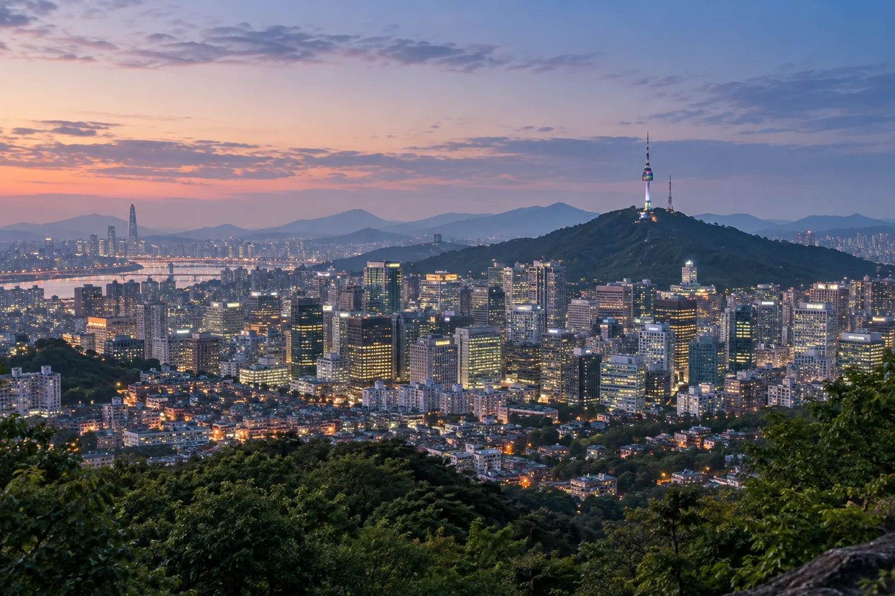
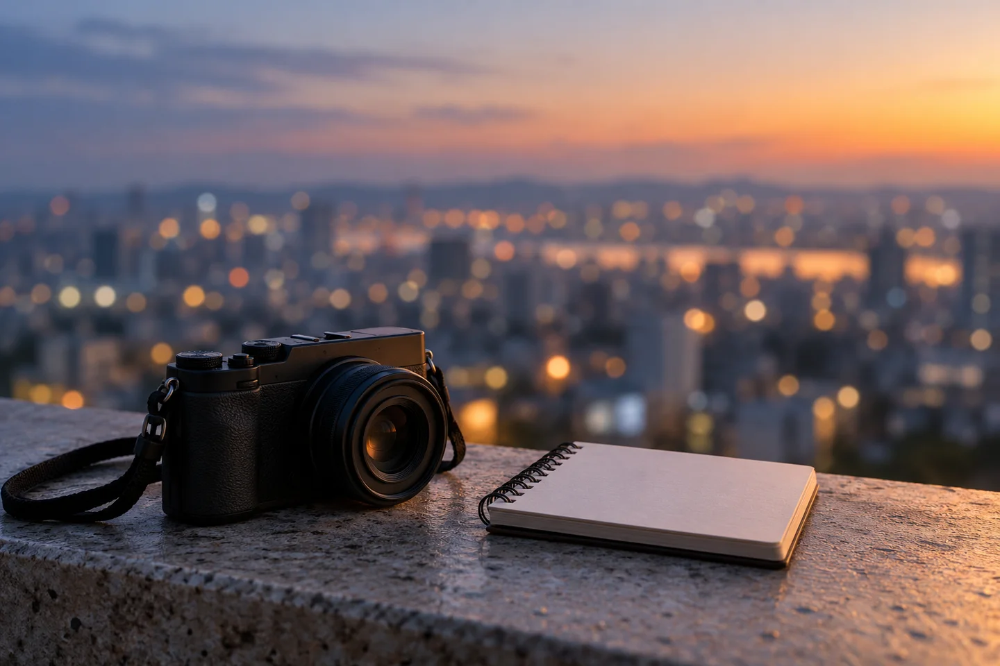

Namsan can be a useful pause in a busy Seoul itinerary. Start with two decisions: how you want to get there, and whether you want to include the N Seoul Tower observatory. This guide offers planning suggestions, with official links for the practical details. It is not a record of a personal visit.
Decide how to arrive, and how to leave.
The tower’s official directions list Namsan circular shuttle buses 01A and 01B, and identify Chungmuro and Dongguk University as nearby subway connections. General vehicle access to the tower is restricted. Check the official route information instead of assuming a taxi can take you all the way to the entrance.
Before leaving your accommodation, save the stop you will use and the return direction. If you prefer the cable car, follow the cable-car section of the official directions and check its separate operating information. Choose the option that fits your walking comfort and the time you have.
N Seoul Tower — Getting Here ↗
Make the observatory a separate decision.

Think about whether your day is centred on an outdoor outing or an observatory visit. For the latter, review current admission information as well as opening hours before choosing an arrival time.
The official hours page says observatory entry ends 30 minutes before closing, and operating times may change with weather or other conditions. Leave time for the journey and any waiting rather than treating the advertised closing time as an arrival target.
N Seoul Tower — Hours and Admission ↗
Pack for the day you are actually going.
Comfortable shoes, a manageable bag and a layer you can easily put on or remove make a flexible starting point. Check the forecast for your visit date before deciding on rain protection or warmer clothing. The autumn setting in this illustration does not indicate today’s weather or leaf colour.
If you have a meal, train or appointment afterward, work backward from that commitment. Give the return journey its own space in your plan. You can shorten the outing without turning the last part into a rush.
Find one detail beyond the skyline.

Once you have found a suitable place to stop, look before taking out the camera. Notice a ridge line, the spacing between buildings or the way light changes across the scene. Choose one small detail to remember instead of trying to collect every angle.
If you take photographs or make a quick note, keep pathways clear and follow signs at the location. A quiet pause can be enough; you do not need to fit every part of the area into one visit.
Keep the practical details current.
The transport and observatory notes above were checked against N Seoul Tower’s official pages on November 2, 2026. Follow those pages for current routes, fares, hours and admission arrangements. The packing and observation ideas are general suggestions, not an official itinerary.
All four images are AI-generated illustrations reused from the Seoul guide after visual review. They do not document an actual visit, current facilities, weather or visibility. The imagined skyline is for atmosphere only.